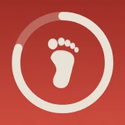

Bientôt sur iPhoneDisponible sur iPhoneLe podomètre fun qui te coache, un pas après l’autre.
Mora t’envoie des encouragements tout au long de la journée pour rester motivée.
Sans ouvrir l’app, regarde où tu en es grâce aux widgets.
Un pas après l’autre. Un jour après l’autre.
Chaque jour validé s’ajoute à ta série de la semaine.
Retrouve tous tes objectifs atteints dans le calendrier.
Non. Mora compte tes pas avec ton iPhone, grâce à Santé et Mouvement et forme. Tu n’as rien d’autre à porter.
Mora transforme ta marche en jeu : un objectif de pas fait pour toi, une série de jours d’affilée à faire grandir, une fête à chaque objectif atteint et un coach qui t’encourage avec le ton que tu choisis.
Pas forcément. Mora part de ta moyenne actuelle pour te proposer un objectif réaliste, que tu peux changer quand tu veux dans ton profil.
Oui. Les widgets d’écran d’accueil et d’écran verrouillé montrent tes pas et ta série, et Mora t’envoie des encouragements au fil de la journée.
Oui. Choisis comment Mora te parle : Coach sportif, Queen (ou Boss) ou Scientifique. Dans ton profil, tu règles aussi quels messages tu reçois (le mot du matin, la moitié, le rappel du soir…) et à quelle heure.
7 jours gratuits, puis 39,99 € par an (soit 3,33 € par mois) ou 7,99 € par mois, sans engagement. Annulable à tout moment.
Pas encore. Mora arrive d’abord sur iPhone, Android suivra.